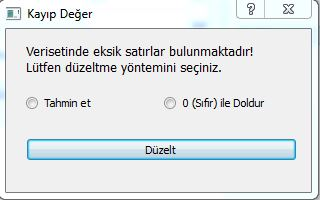

Dosya Menüsü
Dosya Menüsü:
Bu menünün altında bulunan kısımlarda genel olarak dosya açmak, aktif verisetini kaydetmek, farklı kaydetmek, önceki veri setlerini görüntülemek gibi seçenekler mevcut.
Aç:
Bu altmenüyle, yeni bir veriseti yükleme işlemi gerçekleştirilir.
Kaydet:
Bu altmenüyle, üzerinde değişiklik yapılmış veriseti dosyaya kaydedilir. Veriseti üstünde değişiklikler yapıldıktan sonra, yapılan değişiklikler ile veriseti kayıt edilmek istenebilir. Böyle bir durumda Dosya menüsünün altından Kaydet altmenüsüyle veya Toolbarda bulunan Kaydet simgesiyle kayıt işlemi gerçekleştirilebilir.
Eğer son haliyle verisetinde eksik satır veya satırlar var ise Missing Value (Kayıp Değerler) olduğuna dair bir uyarı ekranı açılacaktır ve eksik değerlerin giderilmesi için iki alternatif yöntem sunulacakır.

Missing Value (Kayıp Değerler) ekranından Tahmin et seçeneği işaretlenir ise eksik sütunların olduğu verilerin her biri kendi içerisinde ortalaması alınır ve eksik satırlara yazılır.
Eğer 0 (Sıfır) ile Doldur seçeneği işaretlenir ise boş olan satırlara herhangi bir ayrım gözetmeksizin 0.0 değeri doldurulacaktır.
Farklı Kaydet:
Bu altmenüyle, veriseti yüklendiği halinden farklı bir dosya formatı şeklinde (txt, csv, excel) kaydedilebilir. Eğer farklı kayıt edilmek istenen veriseti üstünde bir eksiklik -Missing Value (Kayıp Değerler)- var ise açılacak uyarı ekranında yapılabilecekler Dosya menüsünün Kaydet altmenüsünde anlatılmıştır.
Önceki Verisetleri:
Bu altmenüyle, daha önceki çalışmalar sırasında açılmış verisetleri bulunur ve hızlıca tekrar açılabilir.